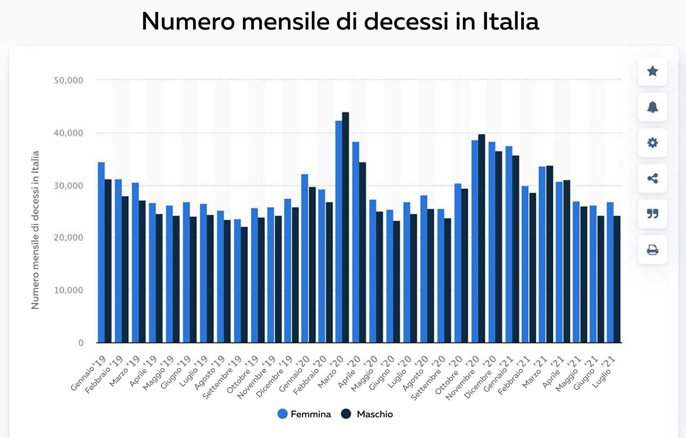

In SOLE 7 settimane, i suoi vasi sanguigni si puliranno naturalmente, la sua pressione sanguigna sarà ripristinata e il suo sistema immunitario sarà rafforzato.
Durante le riprese di un programma televisivo molto diffuso, si verificò un incidente in cui furono scoperti dei propagandisti medici. Uno degli specialisti invitati cominciò improvvisamente a dire qualcosa che non era previsto nel copione. Quello che ha detto ha senza dubbio svegliato il pubblico in studio e i telespettatori, ma soprattutto è stato ascoltato dagli operatori sanitari.
Il carliologo ha dichiarato pubblicamente: "Sicuramente nei loro programmi parlano di coronavirus e vaccinazioni, ma allora perché chiudono un occhio su un altro problema che colpisce più di 1,3 milioni di persone ogni anno!" Perché nessuno parla di malattie del sistema cardiovascolare? Perché tacciono sul fatto che ora c'è un modo per superare l'ipertensione?
Il ipertensione! È il killer numero uno delle persone. E tutti continuano a comportarsi come se niente fosse. Non troverete strumenti moderni per risolvere questo problema.
Il ipertensione è considerato una delle malattie più pericolose. A differenza di molte altre malattie che si trovano negli esseri umani, non porta a problemi di salute temporanei. Il ipertensione progredisce costantemente, portando gradualmente alla morte di una persona. Il ipertensione è la causa di morte insostenibile per milioni di persone, è come una bomba a orologeria che non scoppia immediatamente, ma con il 100% di certezza prima o poi esploderà in piccoli frammenti. Inoltre, questa malattia non è accompagnata da sintomi che indicano la sua mortalità. Un giorno una persona si sente bene, e il giorno dopo un braccio diventa secco, inizia a svilupparsi una cancrena, o un tumore canceroso inizia a crescere nel cervello. Le autorità e la sanità del paese semplicemente si sottraggono e prendono qualsiasi misura, per quanto inutile possa essere contro una malattia asintomatica di cui si soffre da molto tempo. Il ipertensione è incurabile con questo approccio.
La gente non muore per il virus, ma per il ipertensione e le sue conseguenze! Ricordate questo! - ha detto Raffaele Zerbato, che è uno degli esperti invitati di recente, mentre gli altri suoi colleghi nello studio hanno cercato non solo di confutare le sue parole, ma sono rimasti letteralmente ammutoliti.
La figura mostra che le morti di COVID-19 durante l'intero periodo pandemico nel 2020 sono state una proporzione relativamente minore rispetto al numero totale di morti in eccesso.
Le statistiche sono incredibili! La pandemia ha provocato 132.000 morti e circa 210.000 sono le morti per ipertensione.
La cosa più strana e allo stesso tempo più triste è che la conseguenza più grave del virus, il ipertensione, si sviluppa nel 75,87% dei casi! Ma se le persone non avessero questa malattia, che distrugge catastroficamente il sistema immunitario, il virus da cui sarebbero colpite sarebbe altrettanto asintomatico. E in questo caso, questi pazienti rientrerebbero nel gruppo di rischio più grave. Di nuovo, nessuno ne parla, perché la domanda sorge subito: cosa si fa esattamente per combattere questa infida malattia
Tutti nello studio erano disorientati. Specialisti e medici della clinica hanno iniziato a discutere, interrompendosi a vicenda. La trasmissione è stata sospesa e immediatamente seguita da una pausa pubblicitaria, con lo staff del canale che accompagnava Raffaele Zerbato.
Questo show non è andato in onda. Ma gli spettatori ricorderanno a lungo quello che succedeva nello studio durante la sua registrazione.
Abbiamo deciso di fare le nostre ricerche e trovare questo specialista.
Raffaele Zerbato è un medico di alto livello, specialista in scienze mediche e leader nel campo delle complicazioni vascolari del ipertensione.
- Sembra che tutti i suoi colleghi sappiano già dello scandalo in cui è stato coinvolto durante la registrazione del programma. Come ha fatto a non aver paura di fare una tale dichiarazione?
Sapevo esattamente cosa stavo rischiando, ma non potevo tacere. Tutti cercano di affrontare le conseguenze, ma nessuno risolve il problema o cura la malattia stessa. Sono un medico, ho fatto un giuramento per cercare di fermarla.
Sono molto contento che mi abbia contattato, e posso ripetere ciò che ho già detto, riassumendo così le mie precedenti affermazioni. La pandemia passerà, ci sarà un vaccino che sarà usato costantemente, la gente sopravviverà a tutto questo, proprio come qualsiasi altra epidemia che si è verificata più di una volta nel corso della nostra storia. Tuttavia, i virus come l'ambizione, l'avidità e la menzogna non andranno da nessuna parte. Non esiste un vaccino contro questi virus.
Cosa intende dire?
Intendo le malattie con cui i nostri medici hanno lottato per anni. Mi occupo di malattie cardiache, compresa l'ipertensione. E nel mio campo professionale, la menzogna è uno dei fenomeni più comuni.
Sono sicuro che il trattamento delle malattie del sistema muscolo-scheletrico, del tratto gastrointestinale e di qualsiasi altra malattia può essere effettuato sulla base dell'analisi dei sintomi, non solo alleviando la malattia, ma anche liberando completamente il paziente dalla malattia e ripristinando la salute.
La ragione di ciò sono le compagnie farmaceutiche e i loro rappresentanti, che lavorano con i medici di tutto il paese su una base di servizio a pagamento. E ora, quando qualcosa può spaventare ancora di più la gente, le aziende non fanno che aumentare i loro profitti. Tutto è in vendita, per ogni sintomo separatamente, perché in caso di morte sarà comunque associato a una pandemia. Vedo e capisco tutto questo, e sono inorridito da quello che sta succedendo.
Non c'è un trattamento per il ipertensione nel nostro paese
- Intende dire che tutti questi farmaci moderni per il ipertensione sono inefficaci?
I farmaci per il ipertensione che vengono prescritti ai pazienti sono lo scopo principale per spostare il denaro dalle tasche dei pazienti a quelle degli oligarchi che hanno fatto fortuna con la vendita dei farmaci.
Si tratta di droghe legalizzate, a pensarci bene. Il paziente prende le pillole, le sue condizioni migliorano. Il farmaco smette di funzionare e la pressione sale di nuovo. Questo è il principio di tutte le droghe. Per sentirsi meglio, è sufficiente prendere una nuova dose.
La cosa più importante è capire quanto segue: in caso di emergenza, i farmaci chimici sono necessari e giocano un ruolo importante. Per esempio, nella prima guerra mondiale, l'eroina veniva usata nei campi per migliorare le condizioni dei soldati feriti, evitando il dolore e la morte per lo shock traumatico.
Tuttavia, se prendi le pillole continuamente, ti rovineranno semplicemente la salute, proprio come l'eroina. Non così rapidamente, ma il principio della sua azione è esattamente lo stesso, e ti verrà raccomandato di prendere qualche pillola in più per evitare le conseguenze dell'assunzione della droga. Più sono, meglio è per i proprietari delle farmacie e le case farmaceutiche.
- Tuttavia, alcune persone facevano uso di droghe.
- Anche i drogati possono vivere una lunga vita. Ma che tipo di vita è?
Quando la pressione sale, gli uomini a 50 anni soffrono già di prostatite e disfunzioni sessuali. Quando un uomo sperimenta la fatica costante, l'obesità, le gambe gonfie, diventa difficile camminare, le dita si addormentano. Poi compaiono coaguli di sangue nei vasi e questo porta a infarti e ictus.
Una quantità molto piccola di pillole prese per un lungo periodo di tempo e in modo costante può causare il cancro. Guardate le statistiche sul cancro. È una vera epidemia!
Non intendo in questo contesto problemi minori, come disturbi del sonno, ronzii alle orecchie, diminuzione della vista. Ci sarebbe tutta una lista da scrivere. Ma il motivo è sempre lo stesso: pressione alta, che porta all'ipertensione, che nessuno sta cercando di curare. Ma ci sono già dei prodotti per risolvere questo problema e stanno dando ottimi risultati.
Un rimedio per il ipertensione che non è disponibile in farmacia.
- Durante la registrazione del programma, ha cercato di parlare di questo efficace rimedio per il ipertensione, ma è stato letteralmente cacciato dallo studio. Cos'è questo rimedio? E perché i farmacisti se ne allontanano come demoni dall'incenso al solo menzionare il suo nome?
Stavo parlando della composizione naturale del prodotto di Cardiofort. Questa è una miscela unica di erbe. Sì, è molto semplice! Il vantaggio principale di questa miscela naturale è la combinazione unica di biancospino, motherwort, luppolo, equiseto, erba di San Giovanni e fiori di tiglio. Ciascuno degli ingredienti, raccolto al momento giusto e anche nel giorno dell'anno in cui la pianta è più efficace, ha la più alta concentrazione di sostanze medicinali. Nella giusta percentuale, questi ingredienti possono migliorare il recupero della pressione sanguigna di oltre 7 volte.
"Cardiofort" è uno sviluppo del Centro di Biologia Molecolare. È anche conosciuto come un killer naturale dell'ipertensione, perché Cardiofort normalizza la pressione sanguigna e la frequenza cardiaca, pulisce i vasi sanguigni dal colesterolo, ripristina il loro tono ed elasticità.
Le gocce Cardiofort attivano i processi di recupero della pressione e prevengono picchi. Soprattutto se fa diversi cicli di trattamento. In sole 7 settimane si liberera dell'ipertensione.
Per lo sviluppo di Cardiofort, il gruppo di scienziati ha ricevuto un premio internazionale nel campo della cardiologia. Per un approccio innovativo al trattamento dell'ipertensione.
Sembra che dopo questo riconoscimento, i farmacisti abbiano semplicemente dovuto smettere di cercare questo prodotto e dare il diritto di vendere direttamente Cardiofort. Tuttavia, nessuno ha sentito parlare di questa scoperta.
I rappresentanti del settore medico odiano letteralmente questa il gocce. Hanno migliaia di medicine diverse e le loro vendite aumentano i loro profitti. Il farmaco non riesce a rompere il modello esistente e come funziona. Dopo solo sette settimane di utilizzo, la gente non ha più bisogno di visitare le farmacie.
Ecco perché il gocce "Cardiofort" provoca così tanto odio. Nessuno lo annuncia. È persino riconosciuto in tutto il mondo, ha tutti i certificati necessari che confermano la sua efficacia scientifica, migliaia di pazienti soddisfatti. Ecco perché questo prodotto è stato boicottato. Tutti fanno finta che non esista. E quando ne ho parlato in diretta, hanno iniziato a minacciare apertamente.
Iniziate la terapia in modo autonomo
- Quando Cardiofort funziona?
L'obiettivo principale di Cardiofort è la pulizia dei vasi sanguigni. Il funzionamento dell'organismo dipende da questo.
Le gocce Cardiofort puliscono i vasi sanguigni in più fasi:
- Migliora il lavoro del sistema cardiovascolare
- Rafforza i vasi sanguigni
- Pulisce i vasi sanguigni dal colesterolo
- Normalizza la pressione sanguigna
- Ripristina la forza e la flessibilità dei vasi sanguigni e dei capillari
- Migliora il sonno, l'umore e il benessere generale
Questo processo di autoguarigione è chiamato auto-rinnovamento. Questi processi sono naturali, e Cardiofort è il loro catalizzatore, la chiave è che avvia il processo di auto-rinnovamento.
Sbarazzarsi di sette malattie in una settimana
- Quali sono i risultati derivanti dall'assunzione di Cardiofort?
1. Normalizzazione dei livelli di zucchero nel sangue.
Il gocce ha un effetto estremamente benefico. In particolare, riduce la resistenza all'insulina. I componenti biologicamente attivi penetrano nelle cellule del muscolo, del tessuto adiposo e del fegato e hanno un effetto che porta a un migliore assorbimento dell'ormone contenuto nel sangue. Nella letteratura medica scientifica, questo processo è noto come metabolismo secondario, cioè la formazione di cellule secondarie. Di conseguenza, con il tempo, le cellule cominciano a consumare il glucosio in modo più vigoroso, il che porta a una diminuzione del suo contenuto nel sangue. Questo è il modo più sicuro per il corpo di consumare il glucosio.
2. Restauro dei vasi sanguigni.
Le pareti dei vasi sanguigni vengono ripristinate e i microdanni in esse contenuti vengono guariti. I vasi vengono ripuliti dal colesterolo e da altri detriti. Anche i coaguli scompaiono, pulendo i vasi sanguigni e ripristinando i capillari. Di conseguenza, la pressione sanguigna non aumenta, l'affaticamento e l'insonnia scompaiono e le ferite e i tagli guariscono più velocemente.
3. Migliora la salute della pelle, delle ossa e dei muscoli.
Anche la pelle gravemente danneggiata si riprende. Le ferite guariscono, la pelle smette di afflosciarsi e seccarsi. Lo stesso vale per le ossa, la loro composizione sana viene ripristinata e non sono più fragili. Tutti i tessuti si rigenerano e i muscoli tornano ad essere elastici.
4. Migliora la vista.
Anche la vista gravemente compromessa inizierà gradualmente a recuperare
- La vista migliora da 0,5 a 2,1 unità.
- Normalizza la pressione oculare
- I sintomi della cataratta sono ridotti
5. Elimina i problemi di sovrappeso.
Il sovrappeso è un sintomo che peggiora significativamente le condizioni di un paziente con ipertensione fino a 4-5 volte. Inoltre, uno degli effetti del trattamento Cardiofort è la perdita di peso.
6. Ristabilire un'erezione.
Molti pazienti con diagnosi di ipertensione soffrono di disfunzione erettile. Uno degli effetti più sorprendenti di Cardiofort è la normalizzazione dei livelli di testosterone e il ripristino di erezioni sane. Anche nei casi in cui i pazienti hanno più di 70 anni. Gli uomini sono soddisfatti e felici di scoprire che la loro virilità è stata completamente recuperata.
7. Il sistema immunitario comincia a funzionare.
L'apporto di sangue ai tessuti ossei coinvolti nella sintesi delle cellule immunitarie è migliorato. Porta anche a un aumento delle funzioni di difesa del corpo.
Il sistema immunitario ci protegge non solo dai virus. La funzione principale di un sistema immunitario forte è quella di proteggere il corpo dalle cellule cancerogene. Un sistema immunitario sano e forte riconosce e distrugge in tempo le cellule cancerose. Aiuta a prevenire lo sviluppo del tumore.
Anche se il sistema immunitario è efficace solo al 50%, crea una barriera insormontabile contro i virus. E questo è estremamente importante oggi.
Un rappresentante del sindacato dei farmacisti ha interrotto la nostra conversazione telefonica non appena abbiamo menzionato la gocce Cardiofort.

Puzara Milda. Rappresentante del Sindacato dei Farmacisti.
Abbiamo chiamato il capo del sindacato dei farmacisti per scoprire perché non c'è Cardiofort nelle farmacie.
- Benvenuto, signor Puzara! Può dirmi perché le farmacie evitano di menzionare Cardiofort e questa il gocce? Ha sentito parlare di un tale rimedio?i
- Perché sei provocatorio?! Non rispondo a queste domande! Non ti riguardano affatto!
- Si sente riagganciare la cornetta del telefono...
Come acquistare Cardiofort?
Dopo una conversazione simile con il direttore dell'Unione dei Farmacisti del nostro paese, diventa chiaro che la gocce considerata non si trova nelle farmacie ed è improbabile che vi appaia nel prossimo futuro. Ma è possibile acquistarla?
- Sì, tutti coloro che vogliono comprare "Cardiofort" possono farlo direttamente dalla fabbrica ordinando online.
- Perché è possibile ordinare solo Cardiofort online?
Per tre ragioni principali:
- Garanzia di qualità. "Cardiofort" viene inviato al cliente dal produttore.
- Protezione dai rivenditori. In modo che nessuno possa rivendere le erbe ad un prezzo maggiorato di 10-20-30 volte.
- Consegna veloce tramite corriere
Sconto per i pensionati in ogni regione
Attualmente c'è un programma di sostegno sociale per tutti. Come parte di questo programma, è possibile ordinare Cardiofort con uno sconto. Questo fa parte di un programma privilegiato di prevenzione del ipertensione.
Lo sconto è dato principalmente ai clienti di età superiore ai 47 anni che vivono in regioni dove la condizione epidemiologica è a rischio.
Inoltre, vi raccomandiamo di non perdere tempo! Non avrete una seconda possibilità. Non si sa quanto durerà questo programma o quanto Cardiofort sarà disponibile. Le erbe vengono raccolte in determinati giorni dell'anno, in estate e in autunno, e la fornitura non è infinita!
Ricevi Cardiofort ora!
Per ottenere "Cardiofort" come parte del programma privilegiato, hai solo bisogno di un telefono.
Inserisci il tuo numero di telefono nel modulo di richiesta e clicca su "Prendi Cardiofort".
Attenzione! Puoi fare una sola richiesta per un solo numero di telefono!
Al momento, le richieste vengono accettate ed elaborate 24 ore su 24, ma a causa del notevole sovraccarico di lavoro del nostro staff, potresti dover attendere un po'.
Attenzione!
Note Ricorda, che l'ologramma di protezione sul sito deve essere al suo posto:
L'ologramma protettivo garantisce il 100% di fiducia nel venditore e nella qualità del prodotto erogato. Questo significa che sei sul sito ufficiale e che ti verrà inviato un autentico "Cardiofort" e riceverai i consigli e il supporto necessario per telefono.
Testimonianze